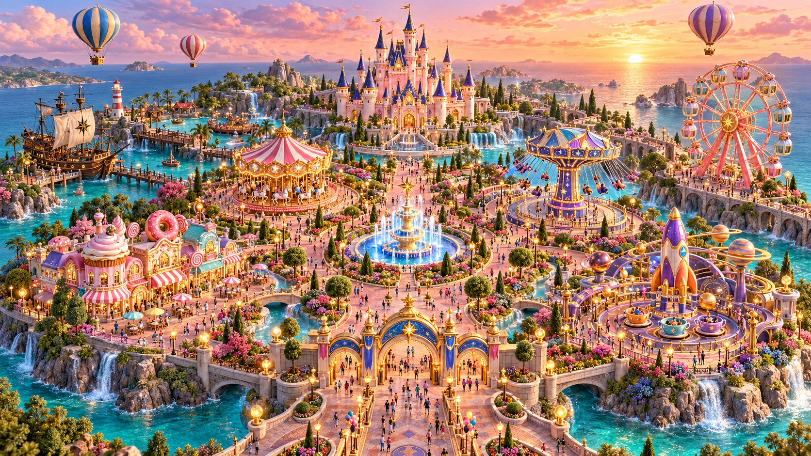

搭建城堡、点亮旋转木马…
拖动场景自由上下左右环顾，滚轮拉近细节。点击底部区域名称或地图，可以快速前往。
选中旋转木马、飞椅、摩天轮、海盗船或茶杯后，点击「乘坐体验」。盛夏日落舞台有四人乐队和金色灯光，选择该区域后点击「前排看演出」。默认配乐为《与我无关》，点击「前排看演出」或右上角播放按钮才开始播放。右上角「上传音乐」可以选择本地MP4或音频，乐队跟随节奏演出；音乐面板可控制彩带。暖夜模式搭配烟花，另有一番风景。
整体概念图 · 建筑、色彩与分区设计参考

已准备好阿冗《与我无关》，点击「前排看演出」或播放按钮开始。也可选择自己的 MP4 或音频，全园配乐与乐队动作、灯光一起随节奏变化。
默认歌曲已准备好，点击「前排看演出」或播放按钮开始。